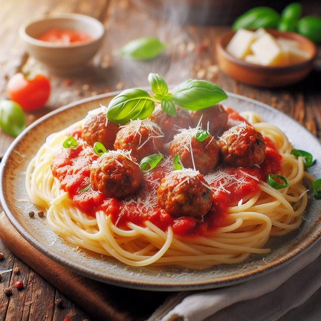

Home
Spaghetti

Description
This is an Italian-style pasta sauce with homemade meatballs that's cooked slowly over low heat for an intense tomato flavor. It's easy to make the spaghetti sauce ahead of time; gently reheat and add meatballs 30 minutes before you're ready to serve your favorite pasta.
Ingredients
Meatballs
- 1 pound lean ground beef
- 1 cup fresh bread crumbs
- 1 tablespoon dried parsley
- 1 tablespoon dried parmesan cheese
- 1/4 teaspoon ground black pepper
- 1/8 teaspoon garlic powder
- 1 egg, beaten
Sauce
- 1/4 cup chopped onion
- 5 cloves garlic, minced
- 1/4 cup olive oil
- 2 cans whole peeled tomatoes
- 2 teaspoons salt
- 1 teaspoon white sugar
- 1 bay leaf
- 1 can tomato paste
- 3/4 teaspoon dried basil
- 1/2 teaspoon ground blackpepper